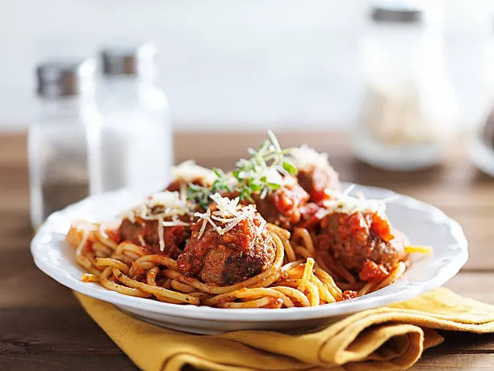

Pasta con tuco

Description
La pasta con tuco es un plato emblematico argentino, consiste en fideos baniados con una salsa de toma conn carne picada.
Ingredients
- Fideos o tallarines
- Salsa de tomate
- Carne picada
- Verduras
Steps
- Cocinar la carne picada
- Agregar las verduras
- Agregar la salsa de tomate
- Cocinar los fideos o tallarines
- Servir
Home